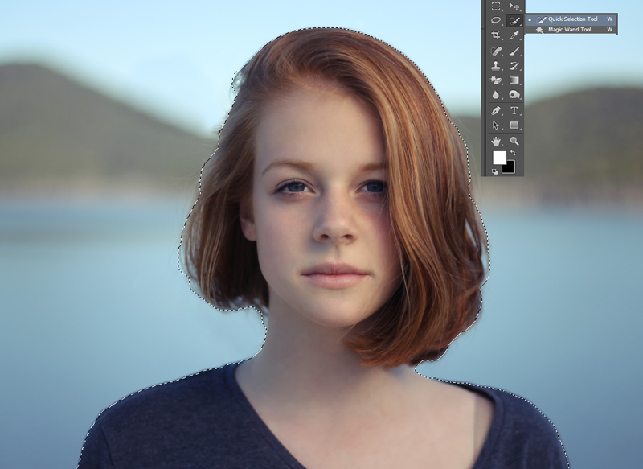
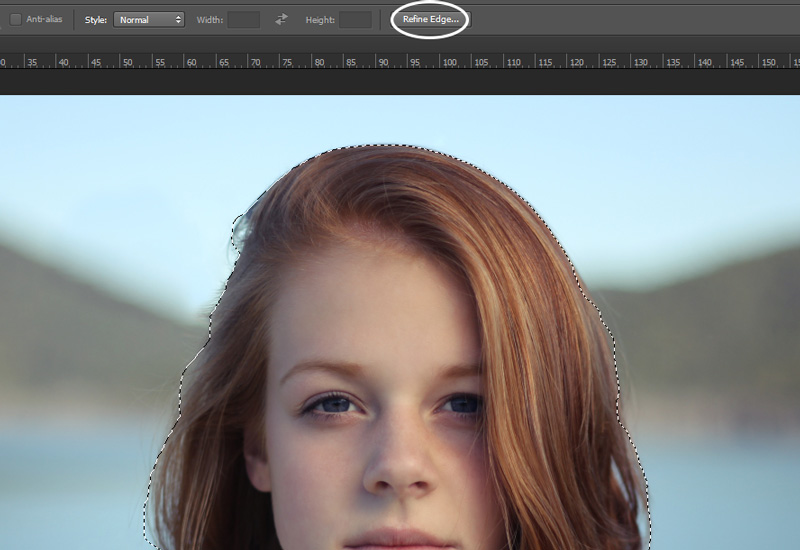
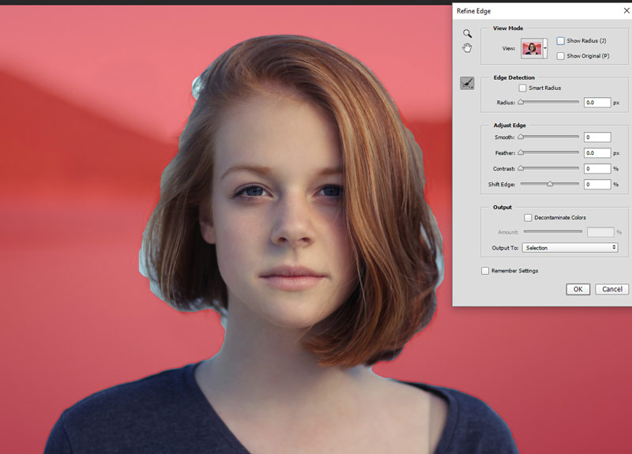
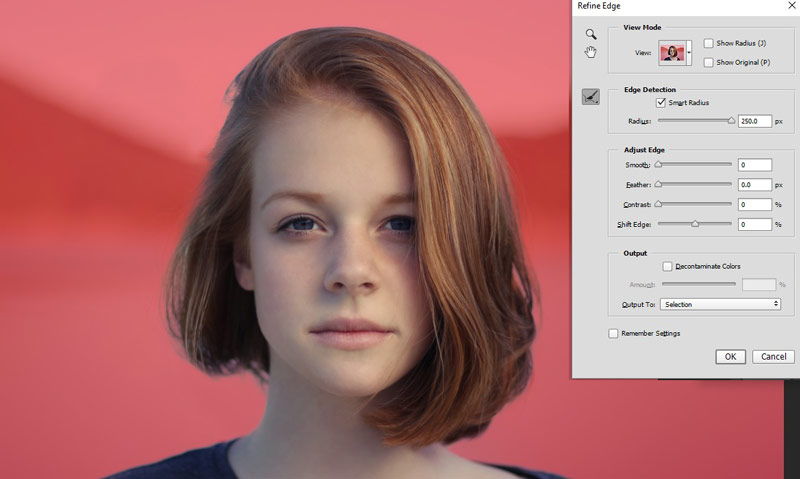
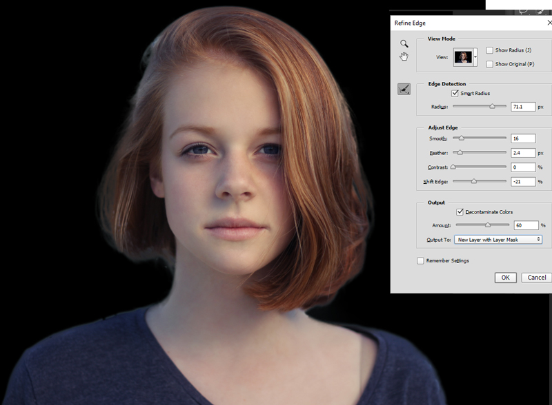
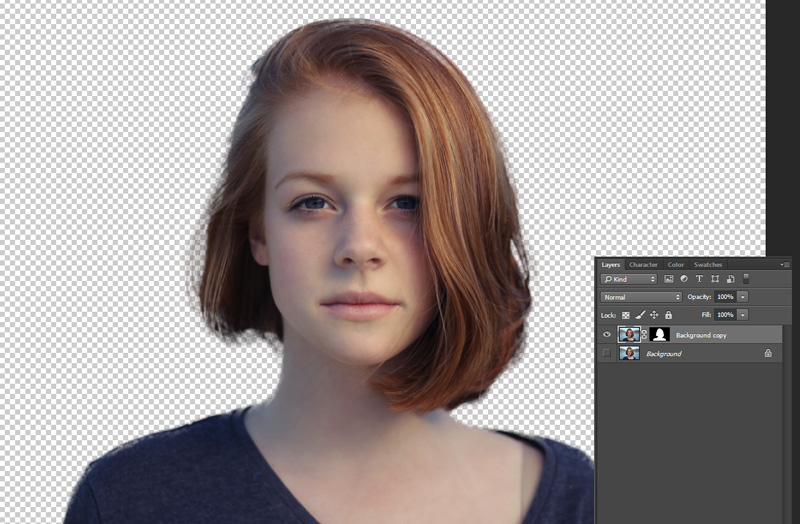
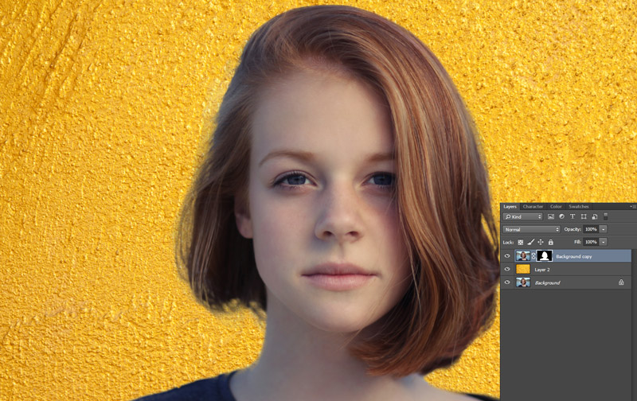

In this Photoshop tutorial, you will learn how to change and add a colored background to a portrait.
Sometimes you might shoot a portrait and decide later that the background doesn’t work, or you might want to use your portrait for something other than you originally intended.
Adding a new background (or removing the old one) is easier than it might seem. Here, we’ll look at how to add a fresh, colored background to an existing portrait.
Final Image
Resources
Step 1 – Make Your Selection
Using the Quick Selection Tool (W), select your subject.

This doesn’t need to be perfect, as we’ll look at refining the edge next.
Step 2 – Refine the Edge
Click Refine Edge

Change the ‘view’ mode to overlay or other suitable mode, so that you can see what you’re doing.

Ticking Show Radius shows you which bits of your edge selection are being changed. Under Edge Detection, ‘Smart Radius’ lets you increase or decrease your selection area.
The algorithm takes into account the number of pixels you select and makes a decision about whether the edge is hard (an easier selection) or soft. Move the slider until so you keep some detail, but the ‘edge’ naturally tapers off.

In our example, we have a good mix of hard edges (the jumper and top of hairline) and soft ones (the wisps of hair).
Refine Radius is a brush that lets you add or remove areas of refinement. This is particularly useful for elements like hair, which may have been tricky to cut around.
Under Adjust Edge:
- Smooth – this takes the rough edges away. As a result, this can make everything look a little soft, so use it sparingly, if at all.
- Feather – the idea of feathering is to better blend the transition between your subject and transparency. Too much of this can have the same problem as the smooth tool, so again, use it sparingly.
- Shift Edge – moves your edge in or out, in a similar way to the radius.

I’ve changed the view to on black so you can see the refinements more easily.
Step 3 – Output Your Selection
If there’s some colour bleed on your image, you can tick decontaminate colours and see if that helps. Then output your selection to new layer with layer mask.
This will output your selection to a transparent background with a layer mask for non-destructive editing.

Step 4 – Add Your New Background
Add your desired new background between your current (hidden) background layer and your recently cut out image.
You’ll see the cutting out isn’t perfect, so time to further refine it.
Click on the layer mask, and using a soft brush, bring back any lost detail and erase any obvious parts of the old background.

Use Burn on the hair where you see any ‘halo-ing’ or lighter patches. It’s wise to duplicate your layer for this, so you can work non-destructively. You can also use the Spot Healing Tool and Clone Tool to cover over any anomalies.
Then create a new layer and color over the hair, changing the blending mode to ‘soft light’ and dipping the opacity. You can see this on the ‘hair color’ layer of the PSD we’ve provided for you.
And We’re Done!
Once you have your finished image, you can change the background as many times as you like and should only have to make minimal adjustments to your subject.